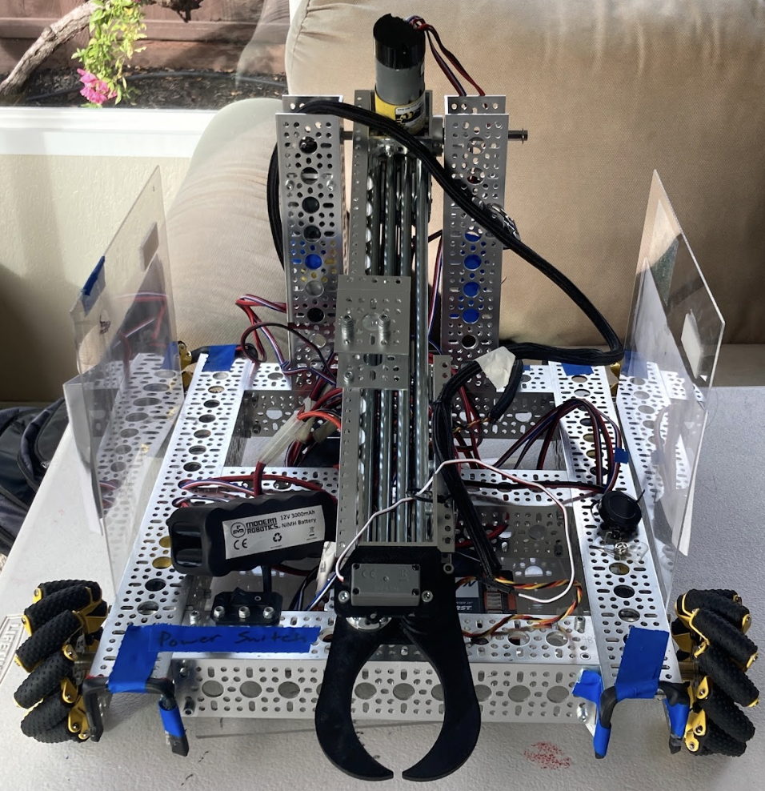

Our second season of designing, building, and competing in FIRST Tech Challenge's Into The Deep competition.
Our robot for the Into The Deep season had a drivetrain chassis powered by four 312 rpm dc motors that were connected to mecanum wheels driven by a bevel gear system. Our robot also had a linear slide used to extend and grab samples as well as score them, and it had an angling mechanism whcih was powered by a torque motor. The linear slide was a 4 bar viper slide. Connected to our viper slide was a 3d printed claw which was designed to grab samples from any position or angle. In addition, we used fish hooks attached to our arm to achieve 2nd level ascent.

This year we used PIDF concepts to stabalize and control our linear slide so we can accurately angle and extend our arm to score the different elements in the competition. We also implemented field-centric robot movement. In addition, we coded our autonomous with a simplified version of roadrunner/pedropathing that uses odometry pods. We wrote all our code using Object Orientated Programming and Finite State Machines
Season was announced, game rules was released, and we started to design our new robot
We won most of our matches and made significant improvements to our robot.
We had got into the semi-finals of the tournament before losing our second match which led us to be disqualified. However, we won the Motivate Award in that tournament as well for our outreach.
We became better at designing, building, and coding as well as being able to implement new mechanical designs and new sensors.
Although we had improved from our last season, it was clear to us that we all needed to spend more time learning to be able to succeed next year.